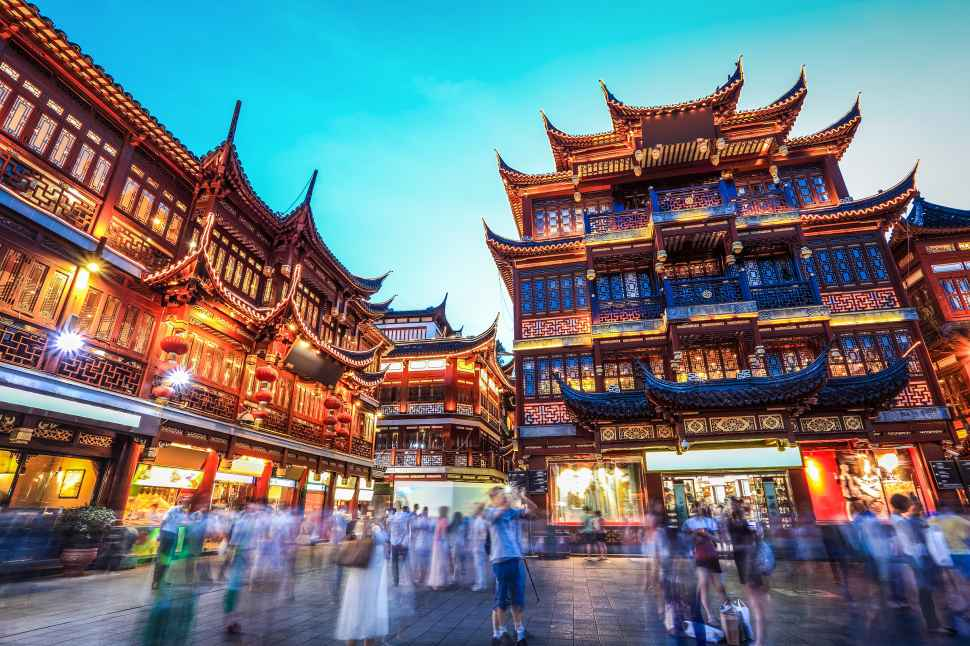

Кита́й, або
Хі́ни (спрощ.: 中国; кит. трад.: 中國; піньїнь: zhōngguó, чжунго, «центральна країна») — культурний регіон і стародавня цивілізація Східної Азії. Китай належить до найбільш прадавніх цивілізацій, яка увібрала у себе велику кількість держав та культур впродовж 6 тисяч років. Громадянська війна у Китаї по закінченню Другої світової війни спричинила поділ цього регіону на дві держави, котрі продовжують вживати у своїй назві слово «Китай».
Це — Китайська Народна республіка (КНР), яка володіє материковим Китаєм, та Республіка Китай, яка контролює острів Тайвань та прилеглі до нього острови.
Китай має довгу і майже неперервну цивілізаційну історію та одну з найстаріших і найскладніших систем письма. До 19 століття він був однією з найпередовіших світових політій і основним культурним центром Східної Азії. Китайський вплив на сусідні держави залишається істотним до сьогодні.
Китай — батьківщина багатьох технічних винаходів, які змінили долю людства. Серед них — папір, компас, порох, друкарство.
Китай має величезний економічний потенціал. Темпи приросту промислової і сільськогосподарської продукції дуже високі. За обсягом ВНП країна займає друге місце в світі після США, а наприкінці XX ст. вона перебувала на сьомому місці.
«China»
Латинська назва Китаю «China», яка перекочувала до багатьох європейських мов, наймовірніше походить від імені китайської династії Цінь (221—206 до н. е.). Скоріш за все, китайські купці, які торгували на шовковому шляху і подорожували до Римської імперії називали себе ціньнцями. Ця назва «Цінь» записувалася римлянами як «Cina», що згодом перетворилося на «China». Це слово використовувалося й в староукраїнській мові XIX — початку XX ст. у формах «Хін», «Хіни», «Хіна».
Історичний поділ Китаю
Адміністративні одиниці вищого рівня у Китаї змінювалися в залежності від правлячої династії чи уряду. До цих одиниць відносять, насамперед, краї та провінції. Серед одиниць нижчого рівня існували префектури, підпрефектури, департаменти, командирства, повіти та округи. До сучасних адміністративних одиниць входять міста рівня під префектури, міста рівня округу, містечка та міські общини.
Більшість китайських династій розташовували свої резиденцію у серцевині Китаю, його етнічно китайській частині — долині річки Хуанхе. Ці династії розширяли свої володіння за рахунок іноземних територій Внутрішньої Монголії, Маньчжурії, Сіньцзяну, Тибету, В'єтнаму і Кореї. Хоча остання маньчжурська династія Цін, спадкоємцями якої визначають себе КНР та Республіка Китай, включила до Китаю більшість вищезгаданих земель, сам Китай має визначені стародавні кордони — Великий китайський мур на півночі, Тибетське плато на заході та джунглі Індокитаю на півдні.
На північ від Великого китайського муру знаходяться Внутрішня Монголія та Маньчжурія, споконвічні місця проживання євразійських кочовиків, які зараз освоєні етнічними китайцями. На Заході розташовані Сінцзянський та Тибетський автономний округи, у яких існували держави європеоїдних уйгурів та монголоїдних тибетців. Зараз там також пришвидшеними темпами провадиться асиміляція. Південь Китаю був батьківщиною багатьох народностей південно-азійського расового типу, малочисельність і роздрібненість яких практично ніколи не становила загрози для китайської влади.
До традиційного поділу Китаю відносять поділ на Північний і Південний Китай, межа між якими пролягає по річці Хуайхе та горам Ціньлун.
Релігія
500 Будд у шанхайському храмі Лунхуа (епоха Троєцарства)
Завдяки «культурній революції» 59 % населення КНР (767 мільйонів чоловік) називають себе атеїстами. Однак для значної групи материкових китайців релігія відіграє дуже важливу роль, особливо буддизм, даосизм і конфуціанство. На відміну від КНР, більша частина населення Тайванського Китаю вважає релігію необхідною складовою власного життя. 93 % сповідують буддизм, даосизм і конфуціанство, 4,5 % — християнство різних течій, і 2,5 % — іслам, юдаїзм та інші вірування.
Головними віруваннями КНР є:
- Конфуціанство
- Даосизм
- Вшанування пращурів
- Буддизм — 200 млн.
- Іслам — 1 млн.
- Християнство — 15 млн протестантів, 5 млн католиків
Головними віруваннями Республіки Китай є:
- Буддизм
- Даосизм
- Конфуціанство
КНР є атеїстичною секулярною державою, однак у ній дозволяється дотримання релігійних практик, які визнані урядом. Тобто, існує можливість реалізувати, щоправда обмежено, право свободи совісті. Даосизм і буддизм, разом із моралістичним конфуціанським кодексом були основними релігійними вченнями Китаю впродовж 2 тисячоліть, тому навіть комуністичний уряд не може нехтувати цією традицією.
Республіка Китай не обмежує урядовими постановами жодні релігії чи віровчення. У ній не існує перешкод для реалізації права на свободу совісті.